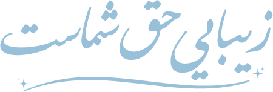
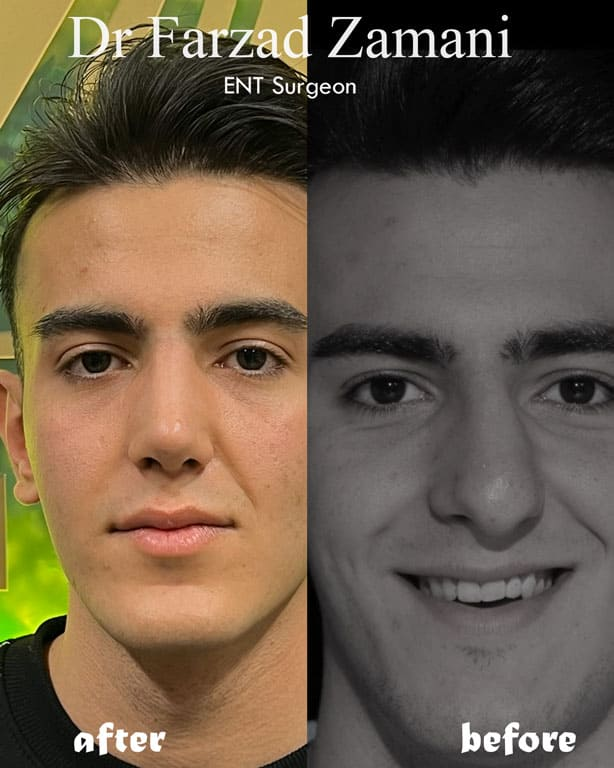
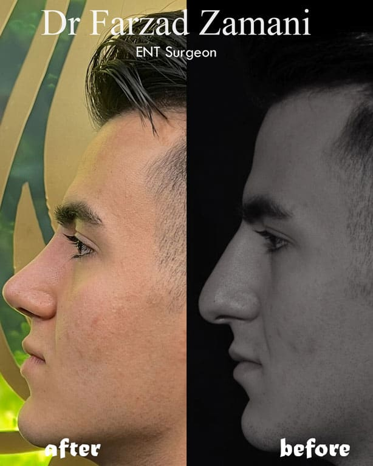
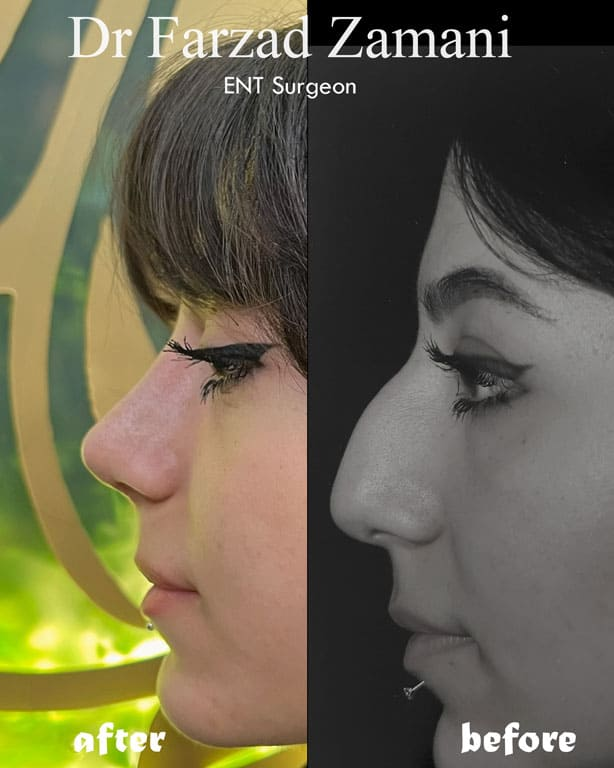
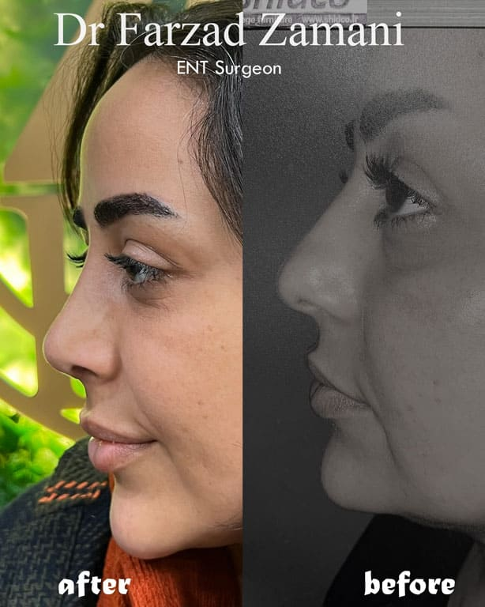
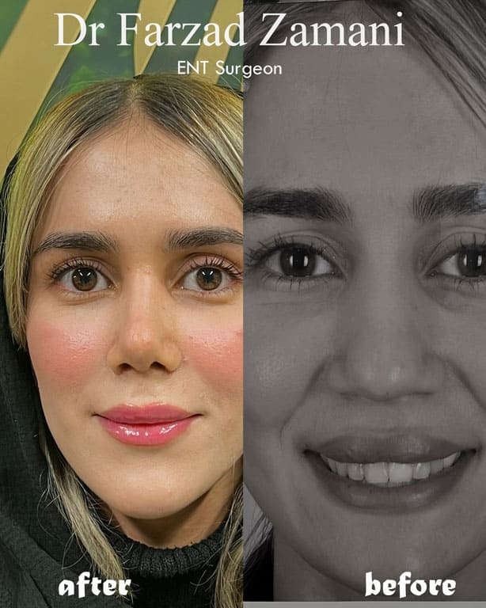
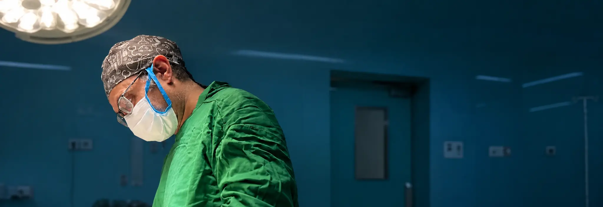

الفقاب مرکزیلوگو در مرکز و منوی دوطرفه، تقارن رسمی و کلاسیک؛ مناسب برند پزشکمحور.
نمونهی محتوای زیر سربرگ
خط طلایی نازک سربرگ را از محتوا جدا میکند.
مطالعهی طراحی ۲۰۲۶-۱۰-۰۴. هر بخش پنج طرح مستقل دارد تا ترکیب نهایی را با هم انتخاب کنیم. جهت: لوکس و حرفهای، آبی سرمهای و طلایی، راستبهچپ، بدون نیاز به عکس واقعی مطب. با دکمهی «موبایل» بالا، همهی طرحها در عرض ۳۹۰ پیکسل دیده میشوند.
اولین چیزی که دیده میشود. همه روی پسزمینهی نمونه نمایش داده شدهاند تا تضاد و شناوری واضح باشد.
خط طلایی نازک سربرگ را از محتوا جدا میکند.
با اسکرول فشرده میشود.
▼ حالت باز منو
منو با لمس ریل باز میشود.
رزرو آنلاین فعلاً خاموش است؛ پس دکمهی اصلی «تماس» است و همهی طرحها برای روشنشدن رزرو آمادهاند.
متخصص گوش، حلق و بینی · اراک
پیش از هر تصمیم، با پزشک و خدمات مطب آشنا شوید و پرسشهایتان را بپرسید.

متخصص گوش، حلق و بینی · اراک
مشاورهی شفاف، رضایت آگاهانه و پیگیری پس از درمان.
متخصص گوش، حلق و بینی · اراک
متخصص گوش، حلق و بینی؛ آشنایی با خدمات، نمونهکارها و مسیر مراجعه.

متخصص گوش، حلق و بینی · اراک
با مطب هماهنگ کنید تا جلسهی ارزیابی تنظیم شود.
اعداد و عنوانها نمایشیاند (خطچین) و باید با اطلاعات تأییدشدهی پزشک جایگزین شوند. هیچ ادعایی بدون تأیید نباید منتشر شود.
بیشتر مراجعین ما با معرفی آشنایان میآیند.(متن نمایشی؛ فقط در صورت تأیید مالک)
از آیکونهای خطی طلایی موجود پروژه استفاده شده است. متن خدمات نمایشی است و متن واقعی باید پزشک تأیید کند.
خدمات تخصصی

آشنایی با حوزه جراحی و فرم بینی
آشنایی با خدمت ←
آشنایی با حوزه جراحی پلک
آشنایی با خدمت ←
آشنایی با حوزه جراحی صورت
آشنایی با خدمت ←
آشنایی با حوزه جراحی چانه
آشنایی با خدمت ←آشنایی با حوزه جراحی و فرم بینی؛ برای ارزیابی و پاسخ به پرسشها با مطب هماهنگ کنید.
خدمات
آشنایی با حوزه جراحی و فرم بینی
آشنایی با حوزه جراحی پلک
آشنایی با حوزه جراحی صورت
آشنایی با حوزه جراحی چانه
برای هماهنگی تماس بگیرید
از دو عکس موجود (پرتره و اتاق عمل) استفاده شده؛ چون کلینیک عکس واقعی ندارد، گرمی با متن و تایپوگرافی ساخته میشود.
دربارهی پزشک
متخصص گوش، حلق و بینی با تمرکز بر ارزیابی دقیق، توضیح شفاف و پیگیری پس از درمان. (متن نمایشی؛ زندگینامهی واقعی را پزشک تأیید کند.)
فلسفهی کاری
«پیش از هر برش، باید شنیدن باشد.»
سخن پزشک
مراجعهکنندهی گرامی؛ هدف من این است که پیش از هر تصمیم، تصویر روشنی از وضعیت و گزینهها داشته باشید. شما را به پرسیدن و فکرکردن دعوت میکنم. (متن نمایشی)
دکتر فرزاد زمانیرویکرد ما
گفتوگو
پاسخ نمایشی؛ پزشک تکمیل میکند.
پاسخ نمایشی؛ پزشک تکمیل میکند.
پاسخ نمایشی؛ پزشک تکمیل میکند.
همان شش تصویر عمومی موجود که در پروتوتایپ قبلی هم بود، بدون دستکاری. هیچ تصویر تازهای وارد نشده است. قبل از انتشار، رضایت مراجع و مقررات تبلیغات پزشکی باید بررسی شود.
نمونهکارها






نمونهکارها
نمونهکارها
نمونهکارها
نمونهکارها
همهی متنها نمایشیاند. سیستم نظرات پروژه فقط با «رضایت مستند + بازبینی حریم خصوصی» انتشار میدهد و همین نشان رضایت در طرحها آمده است.
توضیحات پزشک شفاف بود و پیش از هر تصمیمی فرصت پرسیدن داشتم. احساس کردم کسی عجلهای ندارد.
نظرات مراجعین
توضیحات پزشک شفاف بود و پیش از هر تصمیمی فرصت پرسیدن داشتم. احساس کردم کسی عجلهای ندارد.
پیگیریهای بعد از عمل منظم بود و هر پرسشی را پاسخ دادند.
از طریق یکی از آشنایان معرفی شدم و دقیقاً همانطور که شنیده بودم برخورد حرفهای بود.
توضیحات پزشک شفاف بود و پیش از هر تصمیمی فرصت پرسیدن داشتم. احساس کردم کسی عجلهای ندارد.
ن. ر.پیگیریهای بعد از عمل منظم بود و هر پرسشی را پاسخ دادند.
م. ک.از طریق یکی از آشنایان معرفی شدم و دقیقاً همانطور که شنیده بودم برخورد حرفهای بود.
س. ا.برخورد محترمانه و بدون عجله.
ر. ح.پاسخگویی پس از عمل عالی بود.
ف. ن.پیش از مراجعه همه چیز توضیح داده شد.
پ. ع.از طریق یکی از آشنایان معرفی شدم و دقیقاً همانطور که شنیده بودم برخورد حرفهای بود.
روایت مراجعه
پاسخ تلفنی روشن بود و راهنمایی شدم.
فرصت پرسیدن داشتم و عجلهای نبود.
ویزیتهای کنترل منظم و دقیق بود.
تصویر شاخص موجود در پروژه استفاده شده؛ عنوانها نمایشیاند. مقالات واقعی با نویسنده، بازبین و منبع از پنل منتشر میشوند.
دانستنیها

خلاصهی کوتاه مقاله برای جلب توجه.
دانستنیها
دانستنیها
دانستنیها
پاسخها نمایشیاند و در حد راهنمایی کلی نوشته شدهاند؛ متن نهایی را پزشک تأیید کند.
پرسشها
پرسشها
پرسشها
پرسشها
با مطب تماس بگیرید تا زمان ارزیابی هماهنگ شود. پیش از مراجعه، توضیحات کاملتر ارائه میشود.
خیر. جلسه ارزیابی برای شناخت وضعیت و پاسخ به پرسشهای شماست و تصمیم نهایی با خود شماست.
برنامه مراقبت و ویزیتهای پیگیری پس از عمل در همان جلسات توضیح داده میشود.
روند بهبود در هر فرد متفاوت است و پزشک در مراجعهی حضوری برآورد دقیقتر را اعلام میکند.
رزرو آنلاین خاموش است؛ این بخشها برای «تماس» طراحی شدهاند و با روشنشدن رزرو یک دکمه اضافه میشود. شمارهها همان دادهی موجود پروژهاند.
مسیر مراجعه
خوش آمدید
هنگام تماس، نام معرفیکننده را بفرمایید تا هماهنگی با اطمینان بیشتری انجام شود.
همگی با یادآوری پزشکی «این محتوا جایگزین ویزیت نیست» قابلترکیباند (طرح د).
متخصص گوش، حلق و بینی · اراک
این بخش همیشه در قاب موبایل ثابت نمایش داده میشود. مهمترین نیاز: همیشه یک راه تماس در دسترس، بدون سه دکمهی تکراری.